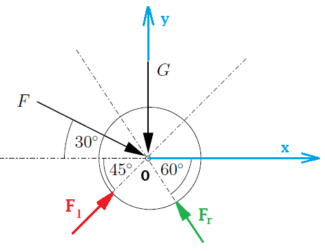

Übungsblatt 1
Aufgabe 1.1
Eine gegebene Kraft \( \vec F \) ist eindeutig in Einzelkräfte zu zerlegen, deren Wirkungslinien gegeben sind. In folgenden Fällen 1 und 3 ist eine solche Zerlegung möglich.
Aufgabe 1.2

Gegeben:
- \( G = 500 N,\; F = 200 N \)
- \( \alpha = 30°,\; \beta = 45°,\; \gamma = 60° \)
Gesucht:
- Welche Kräfte (\( F_l,\; F_r\))werden von der Walze auf die Führung übertragen?
- Auf welchen Wert darf \( F \) höchstens anwachsen, wenn die Walze nicht aus der Führung gedrückt werden soll?

- \( G = 500 N,\; F = 200 N \)
- \( \alpha = 30°,\; \beta = 45°,\; \gamma = 60° \)
-
Bezeichnet \( F_l \) als die von der linken Fürhung wirkende Kraft, \( F_r \) als die
von der rechten Führung wirkenden Kraft.
Die Vektoren der Kräfte \( G,\, F, \, F_l, F_r \) sind:\( \vec G = \begin{bmatrix} G_x \\ G_y \end{bmatrix} = \begin{bmatrix} 0 \\ -G \end{bmatrix} \)
\( \vec F = \begin{bmatrix} F_x \\ F_y \end{bmatrix} = F \cdot \begin{bmatrix} cos(\alpha) \\ -sin(\alpha) \end{bmatrix} \)
\( \vec F_l = \begin{bmatrix} F_{lx} \\ F_{ly} \end{bmatrix} = F_{l} \cdot \begin{bmatrix} cos(\beta) \\ sin(\beta) \end{bmatrix} \)
\( \vec F_r = \begin{bmatrix} F_{rx} \\ F_{ry} \end{bmatrix} = F_{r} \cdot \begin{bmatrix} -cos(\gamma) \\ sin(\gamma) \end{bmatrix} \)
Die Kraftvektoren \( \vec G \) und \( \vec F \) können zu der Resultierenden \( \vec R \) zusammengefasst werden:\( \vec R = \vec G + \vec F \)
\( \vec R = \begin{bmatrix} R_{x} \\ R_{y} \end{bmatrix} = \begin{bmatrix} 0 \\ -G \end{bmatrix} + F \cdot \begin{bmatrix} cos(\alpha) \\ -sin(\alpha) \end{bmatrix} = \begin{bmatrix} F \cdot cos(\alpha) \\ -G - F\cdot sin(\alpha) \end{bmatrix} \)
Die Walze wird von den Kräften \( \vec F_{l} \) und \( \vec F_r \) aus der Führung angegriffen. Da alle Wirkungslinien der Kräfte sich in einem (gemeinsamen) Punkt schneiden, kann die Resultierende \( \vec R \) auch in die zwei Kräfte \( \vec F_{l} \) und \( \vec F_r \) zerlegt werden. Es gilt:\( \vec R = \vec F_{l} + \vec F_r \)